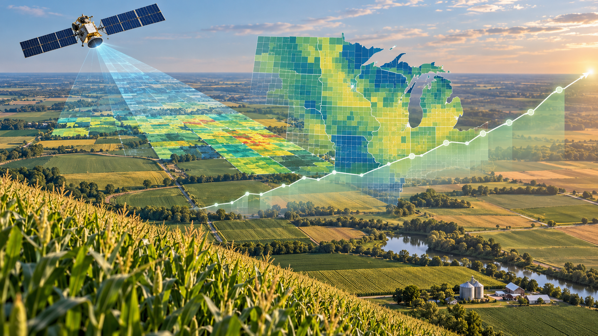
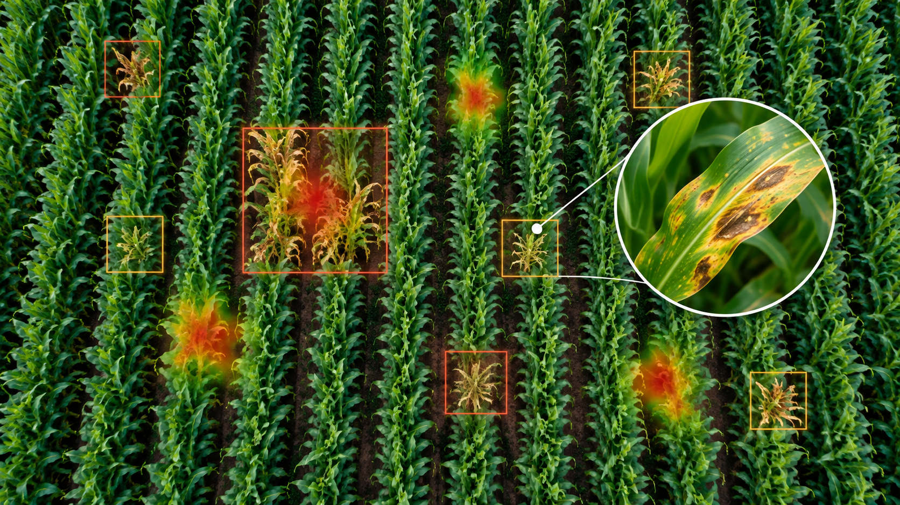
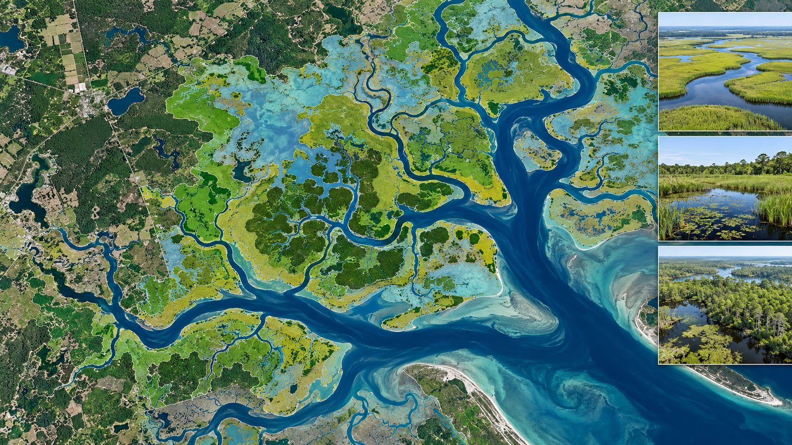
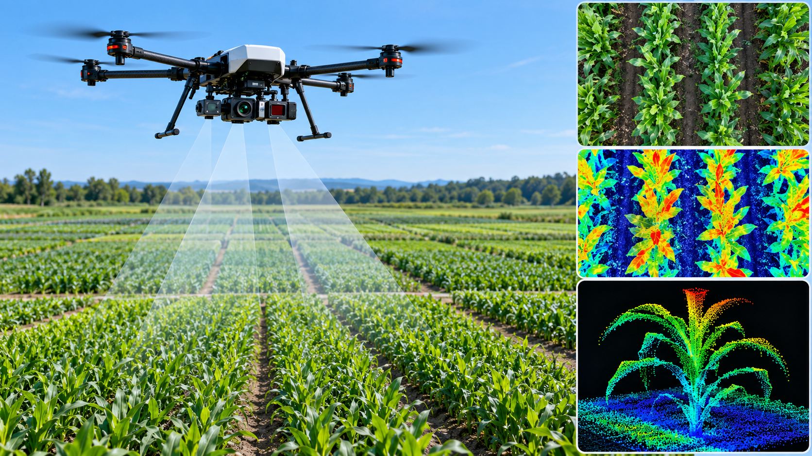
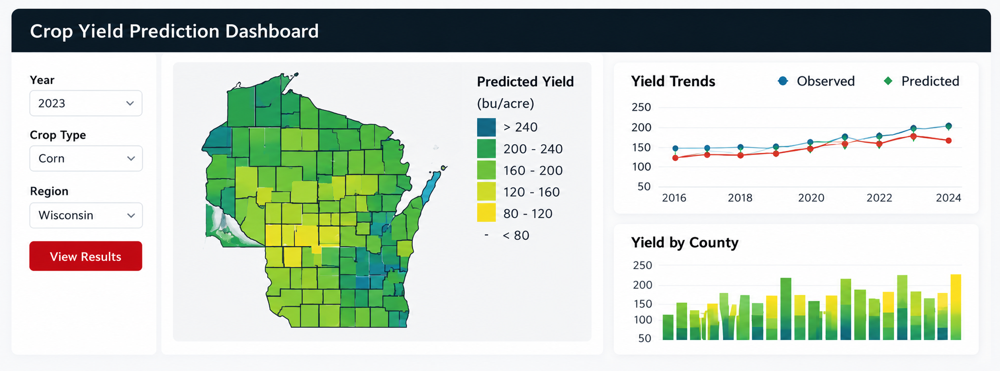

Crop Yield Prediction
Developing machine learning and spatiotemporal models that integrate satellite remote sensing, weather, soil, and other geospatial data to predict crop yield from field to county and regional scales.
Our research develops machine learning, artificial intelligence, and spatiotemporal modeling approaches for agricultural and environmental monitoring and decision-making. We integrate multi-scale remote sensing observations from satellites, drones, and field-based sensors with environmental and geospatial data to understand and predict complex agricultural and environmental processes across space and time. Our work spans scales from individual plants and fields to counties and regional landscapes, with applications including crop yield prediction, crop disease detection, wetland mapping and monitoring, and high-throughput plant phenotyping.

Developing machine learning and spatiotemporal models that integrate satellite remote sensing, weather, soil, and other geospatial data to predict crop yield from field to county and regional scales.

Developing remote sensing and AI approaches for detecting, mapping, and monitoring crop diseases and their spatial and temporal dynamics.

Integrating satellite observations, geospatial data, and machine learning to map wetlands and monitor environmental changes across landscapes and over time.

Using drone and field-based imaging, computer vision, and machine learning to quantify plant traits efficiently and support crop breeding and management.

Featured research tool
We developed an interactive crop yield prediction platform that integrates remote sensing, environmental data, and machine learning to support spatially explicit crop yield estimation and visualization. The platform demonstrates how AI and Earth observation data can be translated into accessible tools for agricultural monitoring and data-driven decision-making.
Explore the Dashboard